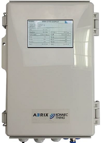

스마틈콤보(제품명 : ITMS-850) 디바이스가 MQTT 브로커로 전송한 데이터를 분석하여 센서 데이터 값을 추출하는 예제 소스코드입니다.
스마트콤보 (제품명 : ITMS-850) 데이터 MQTT 수신 예제
에어릭스의 소규모 사업장 방지시설에 설치되는 맞춤형 IoT 통합센서 제품인 스마트콤보(제품명 : ITMS850) 디바이스는 환경공단 그린링크 서버로 데이터를 전송하는 기능이 기본적으로 제공되고 있지만, 일반적인 설비 모니터링 시스템 구축 용도로도 사용할 수 있도록 센서 데이터를 사용자가 지정한 MQTT 서버로 전송하는 기능도 제공하고 있습니다.
이 Repository에는 MQTT 서버에서 센서 데이터를 전송받는 경우에는 수신한 데이터를 해석해서 센서 값을 추출하는 예제 프로그램의 소스코드와 자료가 포함되어 있습니다.
개요
- 작성자 : 이상훈 (에어릭스 환경시스템사업부 기술연구소 / sanghoon.lee@aerix.co.kr)
- 프로그램 언어 : Python
- 작성일 : 2022-09-06

MQTT 데이터 구성
스마트콤보 디바이스에서 MQTT 서버로 전송하는 데이터는 Json형식이며, 다음과 같이 구성되어 있습니다.
| Key | Data Type | Description | Example |
|---|---|---|---|
| “time” | String | 데이터 송신시간 | “2022-08-23T12:10:27.000300Z” |
| “eui” | Integer | 콤보디바이스 ID | 1001 |
| “payload” | List | 센서 데이터 | [1,0,0,0,0,0,0,0,0,0,4,22,0,220,0,0,0,0,0,62,37,115,0,0,0,0] |
| “gateway_id” | Integer | 게이트웨이 ID(사업장 구분코드로 활용) | 1 |
샘플 데이터
{"time":"2022-08-23T12:10:27.000300Z","eui":1001,"payload":[1,0,0,0,0,0,0,0,0,0,4,22,0,220,0,0,0,0,0,62,37,115,0,0,0,0],"gateway_id":2}
Payload 데이터 포맷
| offset | Data | Unit | Description |
|---|---|---|---|
| 0 | Command Code | N/A | 스마트콤보 센서인 경우 0x01로 고정값 사용 |
| 1 | Header | N/A | * bit 7 : N/A * bit 6 : N/A * bit 5 : high인 경우 압력값 부호 -, low인 경우 압력값 부호 + * bit 4 : high인 경우 온도값 부호 -, low인 경우 온도값 부호 + * bit 3 : DI Port 4 Output * bit 2 : DI Port 3 Output * bit 1 : DI Port 2 Output * bit 0 : DI Port 1 Output |
| 2~3 | AI Port 1 Output | mA | 4~20mA AI 출력 값 (Big Endian) |
| 4~5 | AI Port 2 Output | mA | 4~20mA AI 출력 값 (Big Endian) |
| 6~7 | Differential Pressure Sensor | mmH2O | 차압 센서 값 (Big Endian) |
| 8~9 | Pressure Sensor | mBar | 압력 센서 값 (Big Endian) |
| 10~11 | Temperature | ℃ | 온도 값 (Big Endian) 참고) 온도 값을 100으로 나눠서 사용해야 합니다. |
| 12~13 | Voltage | V | 전압 값 (Big Endian) |
| 14~17 | Current | mA | 전류 값 (Big Endian) |
| 18~21 | Power | wH | 소비 전력 값 (Big Endian) |
| 22~25 | Active Power | W | 유효 전력 값 (Big Endian) |
예제 프로그램 실행방법
repository의 src폴더에 예제 프로그램을 실행시키기 위해서 필요한 소스 코드가 위치해있습니다. src폴더로 이동하여 다음과 같이 프로그램을 실행할 수 있습니다.
python startApp.py
참고1) 프로그램을 실행하기 전에 MQTT 브로커 접속정보가 저장되어 있는 config.json파일의 내용을 실행 환경에 맞게 수정해야 합니다.
참고2) 프로그램을 실행하는 PC에 파이썬이 설치되어 있어야 합니다.